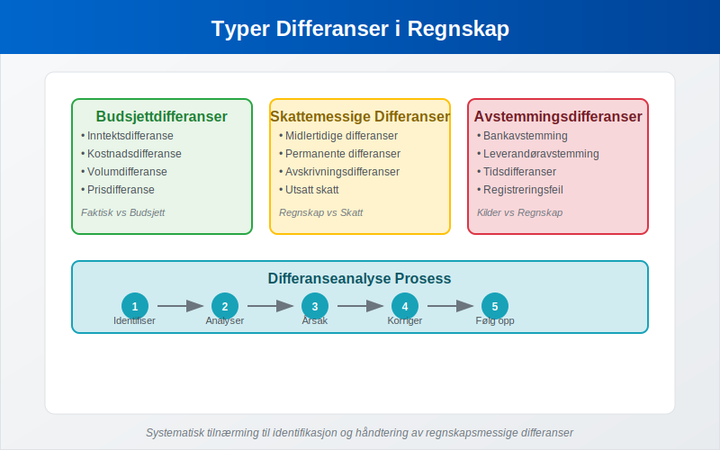
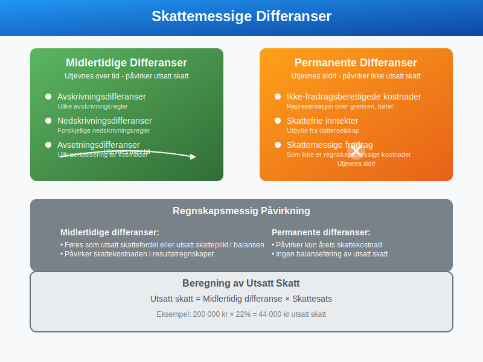
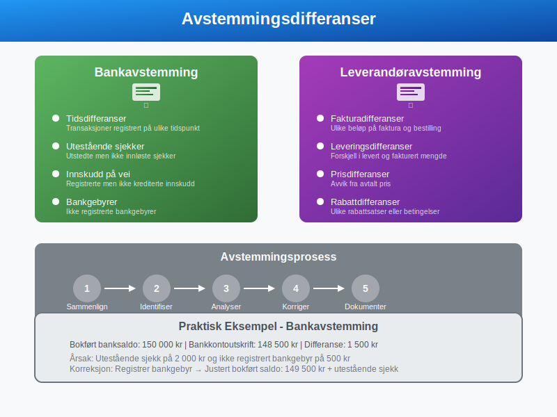
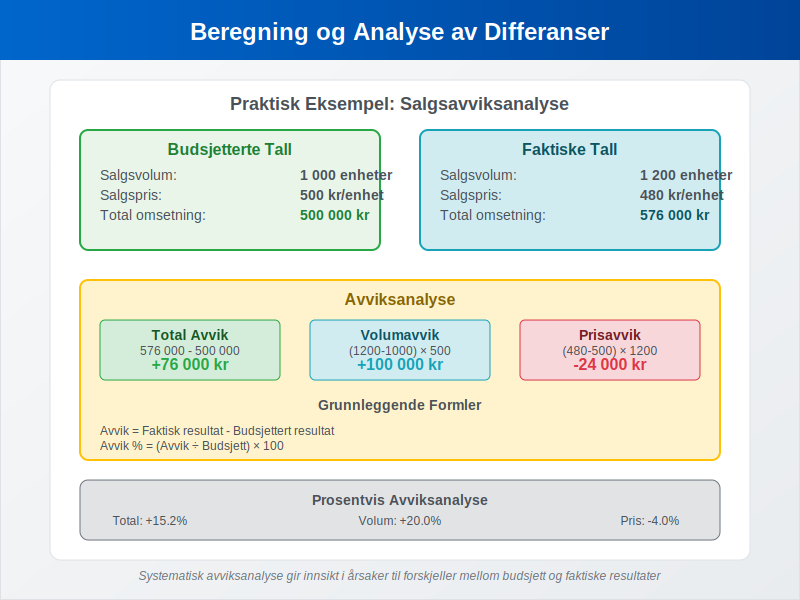
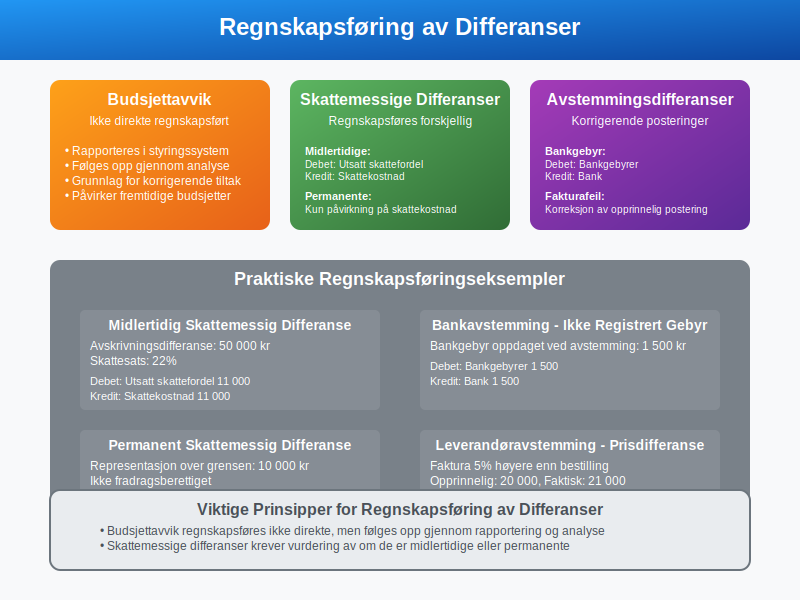
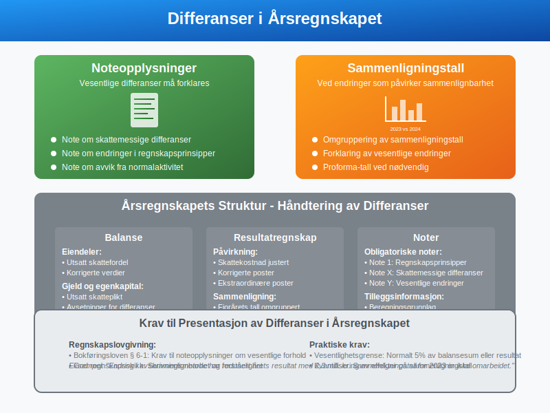
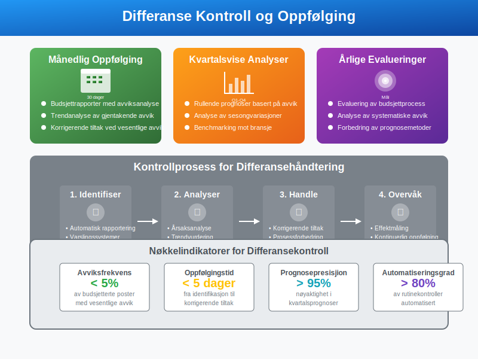
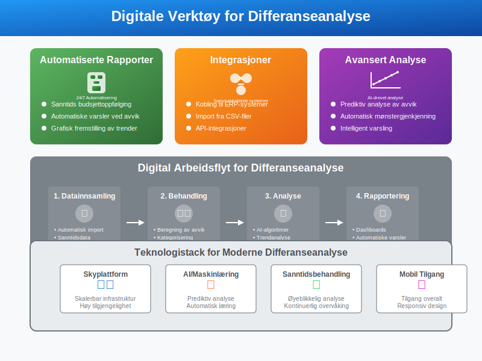
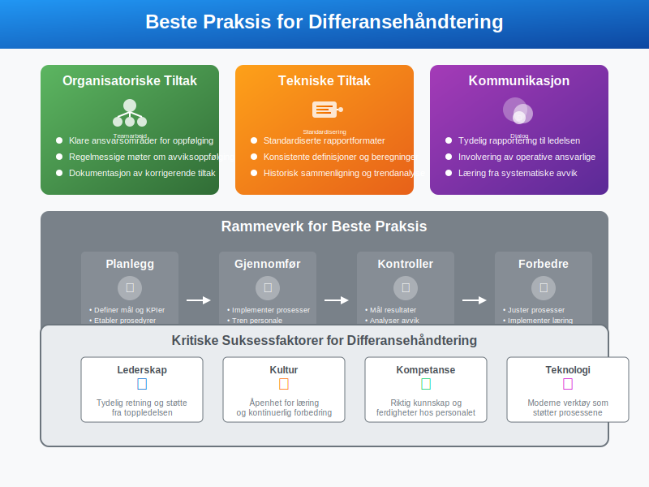
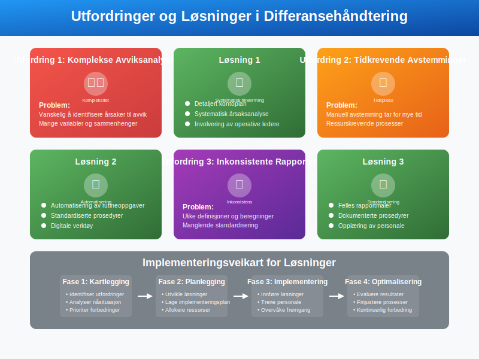

Differanse i regnskap refererer til forskjeller mellom ulike regnskapsmessige størrelser, verdier eller beregninger. Dette begrepet omfatter flere viktige områder innen regnskap og økonomi, fra budsjettavvik til skattemessige forskjeller og avstemminger.
Typer Differanser i Regnskap
Differanser i regnskap kan kategoriseres i flere hovedtyper, hver med sine spesifikke anvendelser og konsekvenser.

1. Budsjettdifferanser
Budsjettdifferanser oppstår når faktiske resultater avviker fra budsjetterte tall. Dette er et sentralt verktøy for avvikshandtering og økonomisk styring.
| Type Differanse | Beskrivelse | Eksempel |
|---|---|---|
| Inntektsdifferanse | Forskjell mellom budsjetterte og faktiske inntekter | Budsjett: 1 000 000 kr, Faktisk: 1 150 000 kr = +150 000 kr |
| Kostnadsdifferanse | Forskjell mellom budsjetterte og faktiske kostnader | Budsjett: 800 000 kr, Faktisk: 850 000 kr = -50 000 kr |
| Volumdifferanse | Forskjell i solgte enheter | Budsjett: 1000 stk, Faktisk: 1200 stk = +200 stk |
| Prisdifferanse | Forskjell i pris per enhet | Budsjett: 100 kr/stk, Faktisk: 95 kr/stk = -5 kr/stk |
2. Skattemessige Differanser
Skattemessige differanser oppstår når regnskapsmessige og skattemessige verdier ikke stemmer overens.

Midlertidige Differanser
Midlertidige differanser utjevnes over tid og påvirker utsatt skatt:
- Avskrivningsdifferanser: Forskjell mellom regnskapsmessige og skattemessige avskrivninger
- Nedskrivningsdifferanser: Ulike regler for nedskrivning av eiendeler
- Avsetningsdifferanser: Forskjeller i periodisering av kostnader
Permanente Differanser
Permanente differanser utjevnes aldri og påvirker ikke utsatt skatt:
- Ikke-fradragsberettigede kostnader: Representasjon over grensen, bøter
- Skattefrie inntekter: Utbytte fra datterselskap
- Skattemessige fradrag: Som ikke er regnskapsmessige kostnader
3. Avstemmingsdifferanser
Avstemmingsdifferanser oppstår ved sammenligning av ulike regnskapskilder.

Bankavstemming
Ved bankavstemming kan følgende differanser oppstå:
- Tidsdifferanser: Transaksjoner registrert på ulike tidspunkt
- Utestående sjekker: Utstedte men ikke innløste sjekker
- Innskudd på vei: Registrerte innskudd som ikke er kreditert banken
- Bankgebyrer: Ikke registrerte bankgebyrer
Leverandøravstemming
- Fakturadifferanser: Ulike beløp på faktura og bestilling
- Leveringsdifferanser: Forskjell i levert og fakturert mengde
- Prisdifferanser: Avvik fra avtalt pris
Beregning og Analyse av Differanser
Korrekt beregning og analyse av differanser er essensielt for god økonomistyring.

Budsjettavviksanalyse
Formel for budsjettavvik: Avvik = Faktisk resultat - Budsjettert resultat
Avviksanalyse i prosent: Avvik % = (Avvik ÷ Budsjett) × 100
Praktisk Eksempel: Salgsavviksanalyse
Budsjetterte tall:
- Salgsvolum: 1000 enheter
- Salgspris: 500 kr per enhet
- Budsjettert omsetning: 500 000 kr
Faktiske tall:
- Salgsvolum: 1200 enheter
- Salgspris: 480 kr per enhet
- Faktisk omsetning: 576 000 kr
Avviksanalyse:
| Type Avvik | Beregning | Resultat |
|---|---|---|
| Total avvik | 576 000 - 500 000 | +76 000 kr |
| Volumavvik | (1200-1000) × 500 | +100 000 kr |
| Prisavvik | (480-500) × 1200 | -24 000 kr |
Regnskapsføring av Differanser
Hvordan differanser regnskapsføres avhenger av type og årsak.

Budsjettavvik
Budsjettavvik regnskapsføres ikke direkte, men følges opp gjennom rapportering og analyse.
Skattemessige Differanser
Midlertidig differanse (utsatt skatt):
Debet: Utsatt skattefordel 50 000
Kredit: Skattekostnad 50 000
Permanent differanse: Påvirker kun årets skattekostnad, ingen balanseføring.
Avstemmingsdifferanser
Bankgebyr ikke registrert:
Debet: Bankgebyrer 1 500
Kredit: Bank 1 500
Differanser i Årsregnskapet
Differanser må håndteres korrekt i årsregnskapet for å sikre korrekt fremstilling.

Noteopplysninger
Vesentlige differanser må forklares i noter:
- Note om skattemessige differanser
- Note om endringer i regnskapsprinsipper
- Note om avvik fra normalaktivitet
Sammenligningstall
Ved endringer som påvirker sammenlignbarhet:
- Omgruppering av sammenligningstall
- Forklaring av vesentlige endringer
- Proforma-tall ved nødvendig
Kontroll og Oppfølging av Differanser
Systematisk oppfølging av differanser er viktig for god økonomistyring.

Månedlig Oppfølging
- Budsjettrapporter med avviksanalyse
- Trendanalyse av gjentakende avvik
- Korrigerende tiltak ved vesentlige avvik
Kvartalsvise Analyser
- Rullende prognoser basert på avvik
- Analyse av sesongvariasjoner
- Benchmarking mot bransje
Årlige Evalueringer
- Evaluering av budsjettprocess
- Analyse av systematiske avvik
- Forbedring av prognosemetoder
Digitale Verktøy for Differanseanalyse
Moderne regnskapssystemer tilbyr avanserte verktøy for differanseanalyse.

Automatiserte Rapporter
- Sanntids budsjettoppfølging
- Automatiske varsler ved avvik
- Grafisk fremstilling av trender
Integrasjoner
- Kobling til ERP-systemer
- Import fra CSV-filer
- API-integrasjoner med andre systemer
Beste Praksis for Differansehåndtering
For å maksimere verdien av differanseanalyse bør følgende prinsipper følges.

Organisatoriske Tiltak
- Klare ansvarsområder for oppfølging
- Regelmessige møter om avviksoppfølging
- Dokumentasjon av korrigerende tiltak
Tekniske Tiltak
- Standardiserte rapportformater
- Konsistente definisjoner og beregninger
- Historisk sammenligning og trendanalyse
Kommunikasjon
- Tydelig rapportering til ledelsen
- Involvering av operative ansvarlige
- Læring fra systematiske avvik
Juridiske og Regulatoriske Aspekter
Håndtering av differanser må følge gjeldende regelverk og standarder.
Regnskapslovgivning
- Bokføringsloven og forskrifter
- God regnskapsskikk
- Internasjonale regnskapsstandarder (IFRS/NGRS)
Skattelovgivning
- Skatteloven og forskrifter
- Ligningspraksis
- Dokumentasjonskrav
Vanlige Utfordringer og Løsninger
Bedrifter møter ofte utfordringer i differansehåndtering som kan løses med riktig tilnærming.

Utfordring 1: Komplekse Avviksanalyser
Problem: Vanskelig å identifisere årsaker til avvik Løsning:
- Detaljert kontoplan
- Systematisk årsaksanalyse
- Involvering av operative ledere
Utfordring 2: Tidkrevende Avstemminger
Problem: Manuell avstemming tar for mye tid Løsning:
- Automatisering av rutineoppgaver
- Standardiserte prosedyrer
- Digitale verktøy
Utfordring 3: Inkonsistente Rapporter
Problem: Ulike definisjoner og beregninger Løsning:
- Felles rapportmaler
- Dokumenterte prosedyrer
- Opplæring av personale
Fremtidige Trender
Differanseanalyse utvikler seg med ny teknologi og endrede krav.
Kunstig Intelligens
- Automatisk identifikasjon av mønstre
- Prediktiv analyse av avvik
- Intelligent varsling
Sanntidsrapportering
- Kontinuerlig overvåking
- Øyeblikkelig avviksdeteksjon
- Proaktiv styring
Integrert Rapportering
- Kombinasjon av finansielle og ikke-finansielle data
- ESG-rapportering
- Helhetlig styringsinformasjon
Differanser i regnskap er et omfattende og viktig område som krever systematisk tilnærming og kontinuerlig oppfølging. Ved å forstå ulike typer differanser og implementere gode rutiner for analyse og oppfølging, kan bedrifter oppnå bedre økonomisk styring og mer presise prognoser.